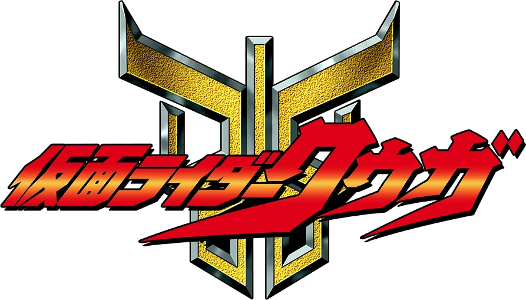
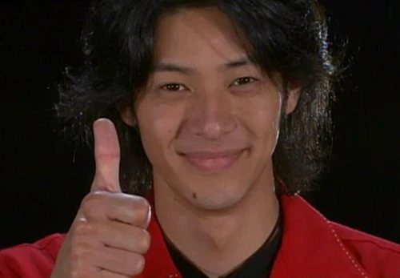

Yusuke Godai is the main protagonist of Kamen Rider Kuuga, the 14th season overall of the Kamen Rider series and the 1st to debut in the Heisei era. He first appears in the first episode and is one of the only characters to appear in all 49 episodes.

After being fused to a mysterious ancient belt called the Arcle due to a freak accident, Yusuke fights the evil Gurongi tribe not for glory but to protect everyone's smiles! He is an optimist to the fullest, never keeping a job for long and always traveling picking up new skills whenever he can as long as he can make people happy. Using the belt, he transforms into Kamen Rider Kuuga and fights monsters in order to protect everyone in his city.

Prior to Kuuga's release, the Kamen Rider franchise had been in an 11-year hiatus after the commercial flop that was Kamen Rider Black RX. Kamen Rider Kuuga premiered in 2000 to massive success, effectively saving the franchise and introducing a new generation to Kamen Rider. Not only was the show popular with children, but adults as well enjoyed the more serious police-drama, as well as mothers and older women finding Joe Odagiri (the actor that played Yusuke Godai) handsome, gaining an entirely new audience and doubling the viewership! This phenomenon is known as the Joe Odagiri effect.